Procedure
This simulation demonstrates the turning operation on a lathe machine, including setup, machining, finishing, and measurement steps.
-
These are the different types of wood used in pattern making:
- Select a suitable wood block to be used as the workpiece.
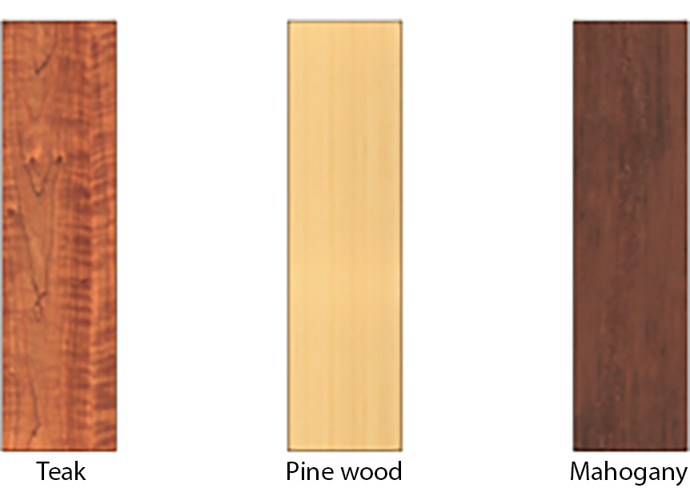
-
Marking on the wooden workpiece:
- Place the wooden block (workpiece) divided into equal sections of 200 mm each on the table.
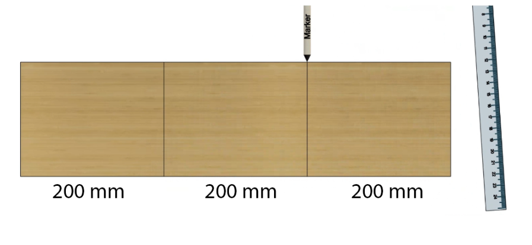
-
Unlock the tool rest:
- Click on the tool rest lock handle to release it so that the tool rest can be moved freely.
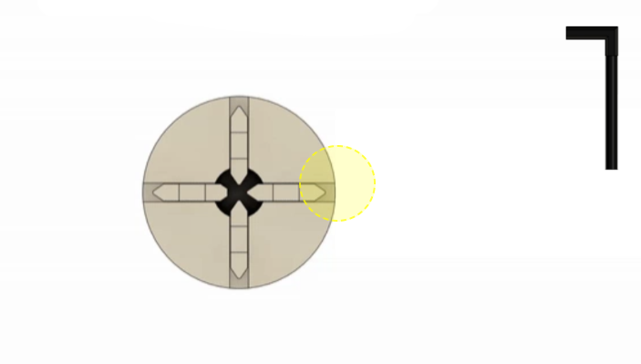
-
Click the chuck key to open the chuck:
- Rotate the chuck key in the shown direction to open the chuck jaws and create space for the workpiece.
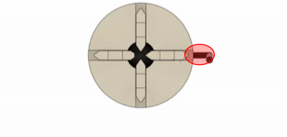
-
Drag the wood piece into the chuck:
- Move the wooden block and place it inside the opened chuck so that it is properly centered.
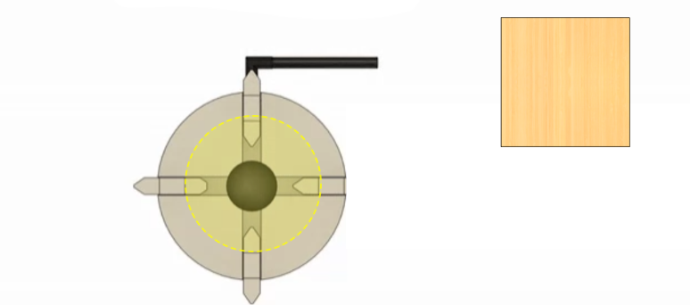
-
Click the chuck key to tighten the workpiece:
- Rotate the chuck key to tighten the jaws evenly and hold the wooden workpiece firmly.
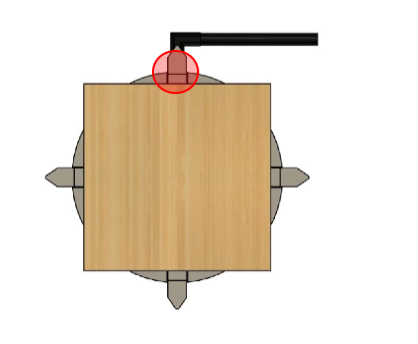
-
Unlock the tool rest lock:
- Click on the tool rest lock handle to release it so that the tool rest can be moved along the bed.

-
Move the tool post to its position:
- Slide the tool post towards the workpiece and place it at a suitable distance for turning.
.png)
-
Move the tailstock to its position:
- Shift the tailstock along the bed towards the workpiece so that it can support the free end.
.png)
-
Adjust the tailstock quill:
- Advance the tailstock quill until the live centre firmly touches and supports the end of the workpiece.
.png)
-
Engage the tool rest lock:
- After positioning the tool rest close to the workpiece, press the lock handle to clamp it securely.
.png)
-
Move the cutting tool to the tool post:
- Drag and drop the cutting tool onto the highlighted tool post so it is ready for machining.
.png)
-
Press the green button to start the lathe:
- Click on the green push button on the control panel to start the rotation of the workpiece.
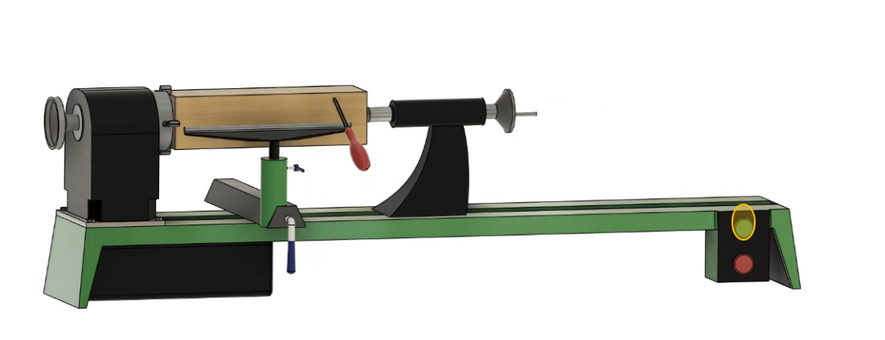
-
Finishing process using sandpaper:
- Drag the sandpaper to the rotating workpiece and apply it gently to smooth the turned surface.
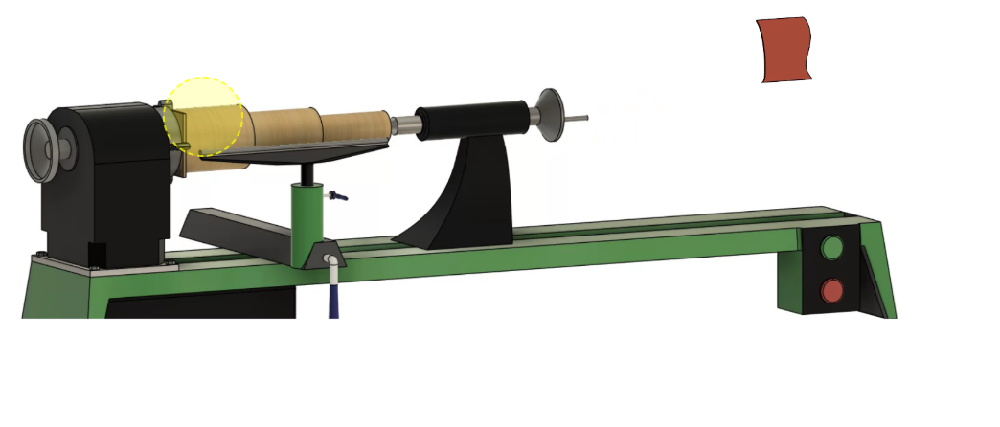
-
Use vernier caliper to measure 100 mm diameter:
- Place the vernier caliper on the largest step of the workpiece and read the diameter as 100 mm.
.png)
-
Use vernier caliper to measure 75 mm diameter:
- Position the vernier caliper on the middle step and confirm that the diameter is 75 mm.
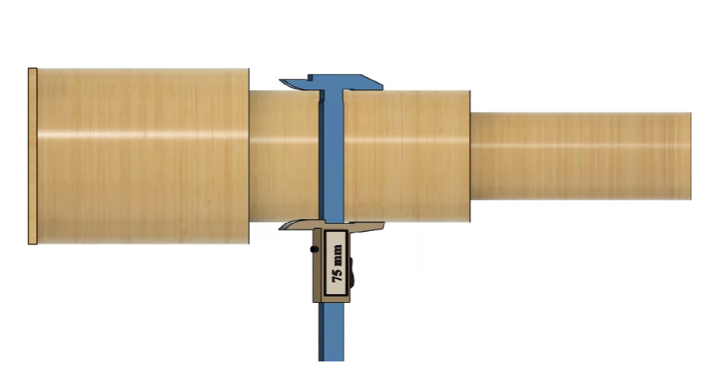
-
Use vernier caliper to measure 50 mm diameter:
- Place the vernier caliper on the smallest step of the workpiece and verify that the diameter is 50 mm.
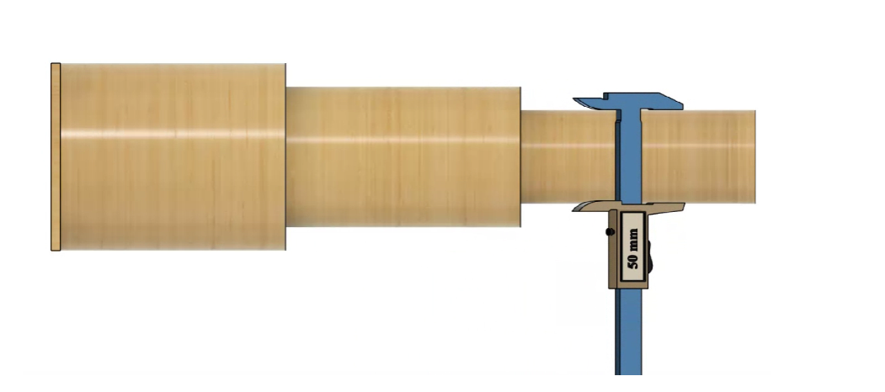
-
Use a ruler to measure the length of the largest step:
- Align the steel ruler under the largest step to check its axial length accurately.
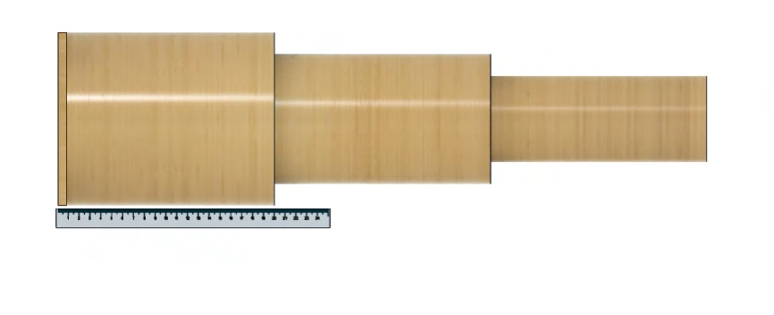
-
Use a ruler to measure the length of the middle step:
- Align the steel ruler under the middle step to check its axial length accurately.
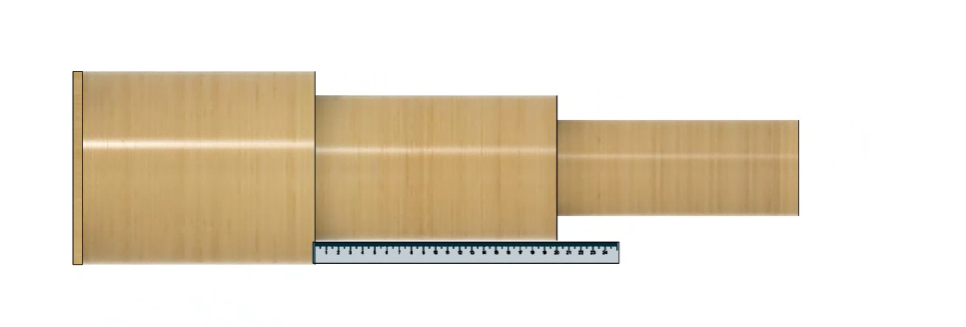
-
Use a ruler to measure the length of the smallest step:
- Align the steel ruler under the smallest step to check its axial length accurately.
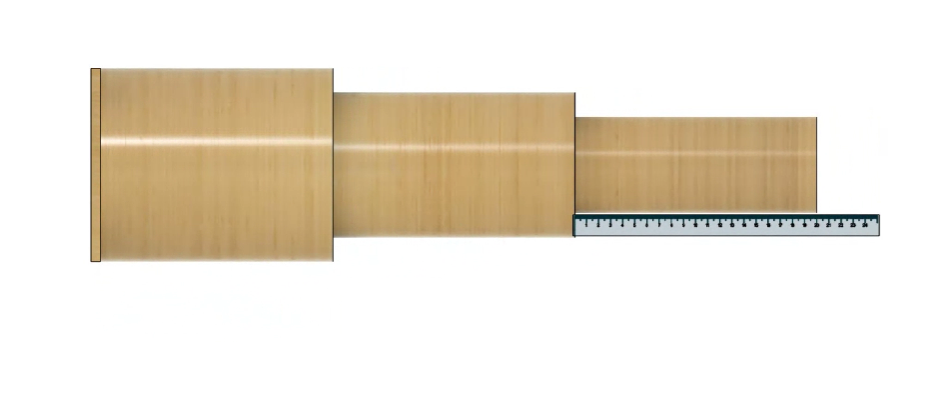